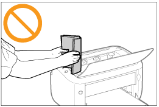
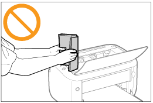

La stampante è costituita da varie parti elettroniche e ottiche di precisione. Leggere la sezione seguente in cui viene spiegato come maneggiare in modo corretto la stampante.
|
Vedere anche "Istruzioni importanti per la sicurezza".
|
Non appoggiare oggetti diversi dai fogli di carta su stampante, vassoi e coperchi. Tale operazione potrebbe danneggiare la stampante.

Non scuotere la stampante, poiché ciò causerebbe una riduzione della qualità di stampa e danni alla stampante.


Non lasciare aperto il coperchio superiore più del necessario. L'esposizione della stampante alla luce diretta del sole o a una luce molto intensa può ridurre la qualità di stampa.
Non aprire il coperchio superiore durante la stampa. Tale operazione potrebbe danneggiare la stampante.
Aprire e chiudere il vassoio e il coperchio con particolare delicatezza. La mancata osservanza di tale indicazione potrebbe causare danni alla stampante.
Per coprire la stampante al fine di evitare l'accumularsi di polvere fuori e all'interno dell'unità, spegnere la stampante e lasciarla raffreddare prima di coprirla.
Se si pensa di non utilizzare la stampante per un periodo di tempo prolungato, scollegare la spina del cavo di alimentazione dalla presa di corrente.
Non utilizzare o conservare la stampante in stanze in cui si utilizzano sostanze chimiche.